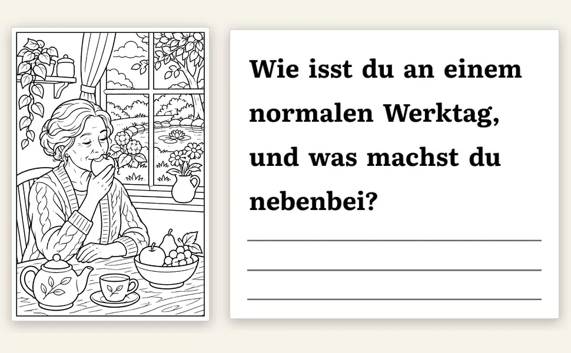
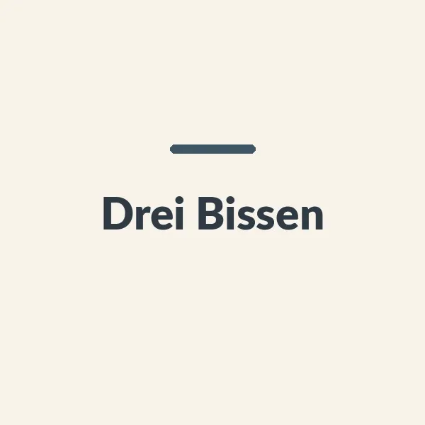

Achtsamkeit entfalten
Wieder mitbekommen, was gerade passiert: 118 kleine Ideen für Achtsamkeit mitten im Alltag.
Öffnet amazon.de in einem neuen Tab.
Beim Abendessen scrollst du durchs Handy und weißt nicht mehr, wie es geschmeckt hat.
Du stehst an der Kasse, und in Gedanken bist du schon beim nächsten Termin. Das ist kein persönliches Versagen. So arbeitet ein Kopf, der ständig beschäftigt ist. In diesem Buch lernst du, wieder mitzubekommen, was gerade passiert, in dir und um dich herum. Nicht, um alles schön zu finden, sondern um zu merken, wann du im Autopiloten läufst, und dann selbst zu entscheiden, wie es weitergeht. Dafür brauchst du kein Kloster und kein Meditationskissen. Es ist ein Ratgeber zum Selbstausprobieren und ersetzt keine Therapie.

Blick ins Buch
Blick ins Taschenbuch: ein Bild zum Ausmalen und deine Seite
Jedes der zehn Kapitel hat drei Abschnitte und eine kurze Pause für zwischendurch. Jeder Abschnitt erklärt erst, worum es geht, dann kommen kleine Aufgaben, für die du nichts vorbereiten musst. Im Taschenbuch folgt nach jedem Abschnitt eine eigene Seite mit Platz für deine Antworten, und vor jedem Kapitel wartet ein Bild zum Ausmalen. Im Anhang stehen sieben längere Übungen, vom Body-Scan bis zur Dankbarkeitsmeditation, und Anlaufstellen, wenn es dir schlecht geht.
Vier kleine Ideen aus dem Buch für deinen Alltag
Rot heißt: atmen
Jede rote Ampel ist ein Signal für drei bewusste Atemzüge, auch wenn du zu Fuß unterwegs bist.

Langsam anfangen
Iss bei einer Mahlzeit die ersten drei Bissen ganz bewusst. Danach darfst du essen, wie du willst.
Erst zuhören, dann antworten
Lass dein Gegenüber im Gespräch ganz ausreden. Zähl nach dem letzten Satz innerlich bis zwei, bevor du antwortest.
Warten, bis es klickt
Solange das Wasser kocht, schaust du nicht aufs Handy. Du achtest nur darauf, wie du ein- und ausatmest, bis es klickt.
Dieses Buch ist ein Ratgeber und kein Ersatz für eine Therapie oder Beratung. Wenn es dir gerade richtig schlecht geht, hol dir bitte Hilfe, zum Beispiel bei der Telefonseelsorge unter 0800 111 0 111 (kostenlos, rund um die Uhr).
Öffnet amazon.de in einem neuen Tab.
Passt auch dazu
 Selbstbewusst, ich werde mir selbst bewusstSich selbst kennen und sicherer auftreten
Selbstbewusst, ich werde mir selbst bewusstSich selbst kennen und sicherer auftreten Selbstwert: Ich bin es mir selbst WertFreundlicher und fairer mit dir umgehen
Selbstwert: Ich bin es mir selbst WertFreundlicher und fairer mit dir umgehen Stück für Stück zu mehr SelbstvertrauenDinge angehen, die du dir nicht zutraust
Stück für Stück zu mehr SelbstvertrauenDinge angehen, die du dir nicht zutraust Lieben und lieben lassenSelbstliebe als Grundlage der Partnerschaft
Lieben und lieben lassenSelbstliebe als Grundlage der PartnerschaftMehr zum Thema Persönlichkeitsentwicklung
 In 30 Tagen zur emphatischeren Persönlichkeit30 Tage lang jeden Tag ein Beispiel aus dem Alltag und eine kurze Übung, um Empathie zu üben.In 30 Tagen weg vom eigenen NarzissmusEigene narzisstische Züge erkennen und ändern: 30 Tage, jeden Tag ein Thema und eine Aufgabe.
In 30 Tagen zur emphatischeren Persönlichkeit30 Tage lang jeden Tag ein Beispiel aus dem Alltag und eine kurze Übung, um Empathie zu üben.In 30 Tagen weg vom eigenen NarzissmusEigene narzisstische Züge erkennen und ändern: 30 Tage, jeden Tag ein Thema und eine Aufgabe. Positiv, die Kraft positiver GedankenWie du Gedanken wie „Das schaffe ich eh nicht“ bemerkst, prüfst und durch fairere ersetzt.
Positiv, die Kraft positiver GedankenWie du Gedanken wie „Das schaffe ich eh nicht“ bemerkst, prüfst und durch fairere ersetzt.